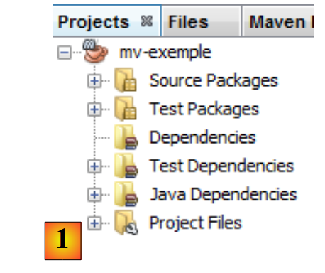
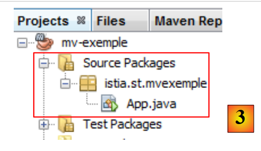
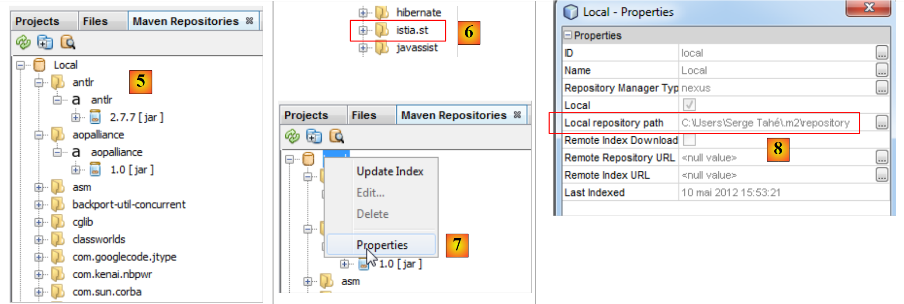

3. Tools Used in This Document
The examples in this document have been tested with the following tools:
- NetBeans versions 6.8 through 7.1.2. The installation of NetBeans is described in [ref3] in section 1.3.1.
- WampServer version 2.2. The installation of WampServer is described in [ref3] in section 1.3.3;
- Maven is integrated into NetBeans. We will now describe this tool.
3.1. Maven
3.1.1. Introduction
Maven is available at the URL [http://maven.apache.org/index.html ]. According to its creators:
Maven’s primary goal is to allow a developer to understand the complete state of a development effort in the shortest possible time. To achieve this goal, there are several key areas that Maven addresses:
- Making the build process easy
- Providing a uniform build system
- Providing quality project information
- Providing guidelines for best practices in development
- Enabling seamless migration to new features
Maven is integrated into NetBeans, and we will use it for just one of its features: managing a project’s libraries. These consist of all the JAR files that must be in the project’s classpath. There can be a large number of them. For example, our future projects will use the Hibernate ORM (Object-Relational Mapper). This ORM consists of dozens of JAR files. The advantage of Maven is that it frees us from having to know them all. We simply need to specify in our project that we need Hibernate by providing all the necessary information to locate the main JAR file for this ORM. Maven then also downloads all the libraries required by Hibernate. These are called Hibernate’s dependencies. A library required by Hibernate may itself depend on other archives. These will also be downloaded. All these libraries are placed in a folder called the local Maven repository.
A Maven project is easily shareable. If you transfer it from one computer to another and the project’s dependencies are not present in the new computer’s local repository, they will be downloaded.
Maven can be used on its own or integrated into an IDE (Integrated Development Environment) such as NetBeans or Eclipse.
Let’s create a Maven project in NetBeans:
 |
- In [1], create a new project,
- in [2], select the [Maven] category and the [Java Application] project type,
 |
- in [3], specify the parent directory for the new project,
- in [4], name the project,
- in [5], the generated project.
Let’s examine the project’s components and explain the role of each one.
 |
- in [1]: the different branches of the project:
- [Source packages]: the project’s Java classes;
- [Test packages]: the project's test classes;
- [Dependencies]: the .jar archives required by the project and managed by Maven;
- [Test Dependencies]: the .jar files required for the project’s tests and managed by Maven;
- [Java Dependencies]: the .jar files required by the project and not managed by Maven;
- [Project Files]: Maven and NetBeans configuration files,
 |
- in [3], the [Source Packages] branch,
This branch contains the source code for the project's Java classes. NetBeans has generated a default class:
package istia.st.mvexemple;
/**
* Hello world!
*
*/
public class App {
public static void main(String[] args) {
System.out.println("Hello World!");
}
}
 |
- in [4], the [Test Packages] branch, which contains the source code for the project's test classes,
- in [5], the JUnit 3.8 library required to run the tests,
NetBeans has generated a default class:
package istia.st.mvexemple;
import junit.framework.Test;
import junit.framework.TestCase;
import junit.framework.TestSuite;
/**
* Unit test for simple App.
*/
public class AppTest extends TestCase {
/**
* Create the test case
*
* @param testName
* name of the test case
*/
public AppTest(String testName) {
super(testName);
}
/**
* @return the suite of tests being tested
*/
public static Test suite() {
return new TestSuite(AppTest.class);
}
/**
* Rigourous Test :-)
*/
public void testApp() {
assertTrue(true);
}
}
This is a JUnit 3.8 test. We will use JUnit 4.x tests later on.
 |
- In [6], the [Dependencies] section is empty here,
This section displays all the libraries required by the project and managed by Maven. All libraries listed here are automatically downloaded by Maven. This is why a Maven project requires Internet access. The downloaded libraries will be stored locally. If another project needs a library that is already present locally, it will not be downloaded. We will see that this list of libraries, as well as the repositories where they can be found, are defined in the Maven project configuration file.
 |
- In [7], the libraries required by the project but not managed by Maven,
 |
- in [7], the [pom.xml] configuration file for the Maven project. POM stands for Project Object Model. We will need to edit this file directly.
The generated [pom.xml] file is as follows:
<project xmlns="http://maven.apache.org/POM/4.0.0" xmlns:xsi="http://www.w3.org/2001/XMLSchema-instance"
xsi:schemaLocation="http://maven.apache.org/POM/4.0.0 http://maven.apache.org/xsd/maven-4.0.0.xsd">
<modelVersion>4.0.0</modelVersion>
<groupId>istia.st</groupId>
<artifactId>mv-exemple</artifactId>
<version>1.0-SNAPSHOT</version>
<packaging>jar</packaging>
<name>mv-exemple</name>
<url>http://maven.apache.org</url>
<properties>
<project.build.sourceEncoding>UTF-8</project.build.sourceEncoding>
</properties>
<dependencies>
<dependency>
<groupId>junit</groupId>
<artifactId>junit</artifactId>
<version>3.8.1</version>
<scope>test</scope>
</dependency>
</dependencies>
</project>
- Lines 5–8 define the Java artifact that will be created by the Maven project. This information comes from the wizard used when creating the project:
 |
A Maven artifact is defined by four properties:
- [groupId]: information that resembles a package name. For example, the Spring framework libraries have groupId=org.springframework, while those of the JSF framework have groupId=javax.faces,
- [artifactId]: the name of the Maven artifact. In the [org.springframework] group, we find the following artifactIDs: spring-context, spring-core, spring-beans, ... In the [javax.faces] group, we find the artifactId jsf-api,
- [version]: the version number of the Maven artifact. Thus, the artifact org.springframework.spring-core has the following versions: 2.5.4, 2.5.5, 2.5.6, 2.5.6.SECO1, ...
- [packaging]: the format of the artifact, most commonly war or jar.
Our Maven project will generate a [jar] (line 8) in the [istia.st] group (line 5), named [mv-example] (line 6) and with version [1.0-SNAPSHOT] (line 7). These four pieces of information must uniquely identify a Maven artifact.
Lines 17–24 list the Maven project’s dependencies, i.e., the list of libraries required by the project. Each library is defined by the four pieces of information (groupId, artifactId, version, packaging). When the packaging information is missing, as here, the jar packaging is used. Another piece of information is added: scope, which specifies at which stages of the project’s lifecycle the library is needed. The default value is compile, which indicates that the library is required for compilation and execution. The value test means that the library is required during project testing. This is the case here with the JUnit 3.8.1 library. If this library is not present in the local repository on the machine, it is downloaded.
3.1.2. Running the project
We run the project:
 |
In [1], the Maven project is built and then executed [1]. The logs in the NetBeans console are as follows:
The result is line 23. We can see that even for this simple case, Maven downloaded some dependencies (lines 17 and 20).
3.1.3. The file system of a Maven project
 |
- [1]: The project’s file system is in the [Files] tab,
- [2]: the Java sources are in the [src/main/java] folder,
- [3]: the Java test sources are in the [src/test/java] folder,
- [4]: the [target] folder is created by the project build,
- [5]: Here, the project build has created an archive [mv-example-1.0-SNAPSHOT.jar].
3.1.4. The Local Maven Repository
We mentioned that Maven downloads the dependencies required for the project and stores them locally. You can explore this local repository:
 |
- in [1], select the [Window / Other / Maven Repository Browser] option,
- in [2], a [Maven Repositories] tab opens,
- in [3], it contains two branches, one for the local repository and the other for the central repository. The latter is enormous. To view its contents, you must update its index [4]. This update takes several tens of minutes.
 |
- In [5], the libraries in the local repository,
- in [6], you will find a branch [istia.st] that corresponds to our project’s [groupId],
- in [7], you can access the local repository properties,
- in [8], you see the path to the local repository. It’s useful to know this because sometimes (rarely) Maven no longer uses the latest version of the project. You make changes and notice they aren’t being applied. You can then manually delete the branch in the local repository corresponding to your [groupId]. This forces Maven to recreate the branch from the latest version of the project.
3.1.5. Searching for an artifact with Maven
Now let’s learn how to search for an artifact with Maven. Let’s start with the list of current dependencies in the [pom.xml] file:
<project xmlns="http://maven.apache.org/POM/4.0.0" xmlns:xsi="http://www.w3.org/2001/XMLSchema-instance"
xsi:schemaLocation="http://maven.apache.org/POM/4.0.0 http://maven.apache.org/xsd/maven-4.0.0.xsd">
<modelVersion>4.0.0</modelVersion>
<groupId>istia.st</groupId>
<artifactId>mv-exemple</artifactId>
<version>1.0-SNAPSHOT</version>
<packaging>jar</packaging>
<name>mv-exemple</name>
<url>http://maven.apache.org</url>
<properties>
<project.build.sourceEncoding>UTF-8</project.build.sourceEncoding>
</properties>
<dependencies>
<dependency>
<groupId>junit</groupId>
<artifactId>junit</artifactId>
<version>3.8.1</version>
<scope>test</scope>
</dependency>
</dependencies>
</project>
Lines 17–23 define dependencies that we will modify to use the latest versions of the libraries.
 |
First, we remove the current dependencies [1]. The [pom.xml] file is then modified:
<project xmlns="http://maven.apache.org/POM/4.0.0" xmlns:xsi="http://www.w3.org/2001/XMLSchema-instance"
xsi:schemaLocation="http://maven.apache.org/POM/4.0.0 http://maven.apache.org/xsd/maven-4.0.0.xsd">
<modelVersion>4.0.0</modelVersion>
<groupId>istia.st</groupId>
<artifactId>mv-exemple</artifactId>
<version>1.0-SNAPSHOT</version>
<packaging>jar</packaging>
<name>mv-exemple</name>
<url>http://maven.apache.org</url>
<properties>
<project.build.sourceEncoding>UTF-8</project.build.sourceEncoding>
</properties>
<dependencies></dependencies>
</project>
Line 17: The removed dependency no longer appears in [pom.xml]. Now, let's search for it in the Maven repositories.
 |
- In [1], we add a dependency to the project;
- in [2], we must specify information about the artifact we are looking for (groupId, artifactId, version, packaging (Type), and scope). We start by specifying the [groupId] [3],
- in [4], we press [space] to display the list of possible artifacts. Here, [junit] and [jnit-dep]. We choose [junit],
- in [5], following the same procedure, we select the most recent version. The packaging type is jar,
- in [6], we select the test scope to indicate that the dependency is only needed for testing.
 |
At [6], the added dependencies appear in the project. The [pom.xml] file reflects these changes:
<project xmlns="http://maven.apache.org/POM/4.0.0" xmlns:xsi="http://www.w3.org/2001/XMLSchema-instance"
xsi:schemaLocation="http://maven.apache.org/POM/4.0.0 http://maven.apache.org/xsd/maven-4.0.0.xsd">
<modelVersion>4.0.0</modelVersion>
<groupId>istia.st</groupId>
<artifactId>mv-exemple</artifactId>
<version>1.0-SNAPSHOT</version>
<packaging>jar</packaging>
<name>mv-exemple</name>
<url>http://maven.apache.org</url>
<properties>
<project.build.sourceEncoding>UTF-8</project.build.sourceEncoding>
</properties>
<dependencies>
<dependency>
<groupId>junit</groupId>
<artifactId>junit</artifactId>
<version>4.10</version>
<scope>test</scope>
<type>jar</type>
</dependency>
</dependencies>
</project>
Note that the [pom.xml] file does not mention the [hamcrest-core-1.1] dependency shown in [6]. This is because it is a dependency of JUnit 4.10 and not of the project itself. This is indicated by a different icon in the [Dependencies] branch. It was downloaded automatically.
Now suppose we don’t know the [groupId] of the artifact we want. For example, we want to use Hibernate as an ORM (Object Relational Mapper), and that’s all we know. We can then go to the site [http://mvnrepository.com/]:
In [1], you can enter keywords. Type in hibernate and run the search.
 |
- In [2], select the [groupId] org.hibernate and the [artifactId] hibernate-core,
- In [3], select version 4.1.2-Final,
- in [4], we get the Maven code to paste into the [pom.xml] file. Let’s do that.
<project xmlns="http://maven.apache.org/POM/4.0.0" xmlns:xsi="http://www.w3.org/2001/XMLSchema-instance"
xsi:schemaLocation="http://maven.apache.org/POM/4.0.0 http://maven.apache.org/xsd/maven-4.0.0.xsd">
<modelVersion>4.0.0</modelVersion>
<groupId>istia.st</groupId>
<artifactId>mv-exemple</artifactId>
<version>1.0-SNAPSHOT</version>
<packaging>jar</packaging>
<name>mv-exemple</name>
<url>http://maven.apache.org</url>
<properties>
<project.build.sourceEncoding>UTF-8</project.build.sourceEncoding>
</properties>
<dependencies>
<dependency>
<groupId>junit</groupId>
<artifactId>junit</artifactId>
<version>4.10</version>
<scope>test</scope>
<type>jar</type>
</dependency>
<dependency>
<groupId>org.hibernate</groupId>
<artifactId>hibernate-core</artifactId>
<version>4.1.2.Final</version>
</dependency>
</dependencies>
</project>
We save the [pom.xml] file. Maven then downloads the new dependencies. The project evolves as follows:
 |
- in [5], the [hibernate-core-4.1.2-Final] dependency. In the repository where it was found, this [artifactId] is also described by a [pom.xml] file. This file was read, and Maven discovered that the [artifactId] had dependencies. It downloads those as well. It will do this for every downloaded [artifactId]. Ultimately, we find in [6] dependencies that we did not request directly. They are indicated by an icon different from that of the main [artifactId].
In this document, we use Maven primarily for this feature. This saves us from having to know all the dependencies of a library we want to use. We let Maven manage them. Furthermore, by sharing a [pom.xml] file among developers, we ensure that every developer is indeed using the same libraries.
In the examples that follow, we will simply provide the [pom.xml] file used. The reader need only use it to replicate the conditions described in the document. Furthermore, Maven projects are supported by the major Java IDEs (Eclipse, NetBeans, IntelliJ, JDeveloper). Thus, the reader can use their favorite IDE to test the examples.